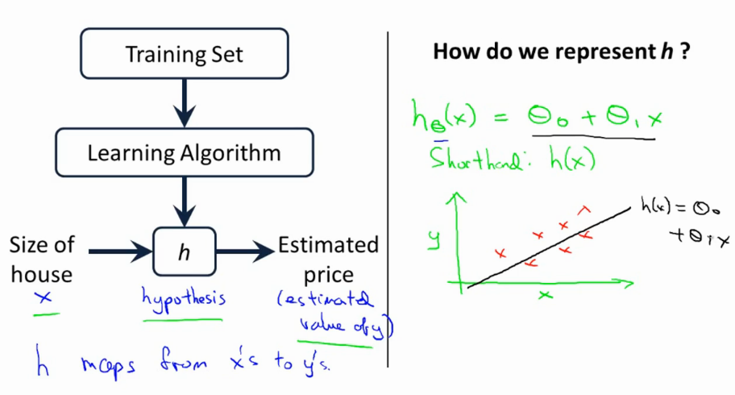

Provides notes for Andrew NG Machine Learning Course on Coursera.
Lesson 1
Supervised learning -> give right answer
Regression problem -> Predict real-valued output
Classification problem -> Discrete valued-output
Notations
m = num training examples
x′s = input variable / features
y′s = output / target variable
(x,y) = one training sample
(xi, yi) -> i-th training sample; i=1...m
Model
Starting with the linear case first. More complex models grow from here.
This model is called a linear regression with one variable: x.
Also named Univariate Linear Regression

Goal
Given a training set, our goal is to find a function h:X→Y so that h(x) is a good predictor for the corresponding value of Y.
If target value is continuous →regression, if discrete →classification
Cost function
The hypothesis:
hθ(x)=θ0+θ1(x)
is just a linear mapping with θ0 the bias.
minθ0,θ12m1i=1∑m(hθ(xi)−yi)2
"Find the values of θ0,θ1 so that the average (1/2m) of the sum of squared errors between my predictions minus the actual values of the X is minimized" .
This means we need to minimize the Mean-Squared-Error cost function
J(θ0,θ1)=2m1i=1∑m(hθ(xi)−yi)2
Example
J(0.5) --> Each value of θ1 gives a different loss. We want to find the value that MINIMIZES this value, in this case the GLOBAL MINIMUM θ1=1.
Only θ1 is a sort of bow shape. If you have both θ0 and θ1 you have a 3d plot as follows
Gradient Descent
================
More general algo --> use GD to minimize some arbitrary cost function J(θ0,θ1)
start with some random θ0 and θ1
keep changing both to reduce J
do this until you converge to a (local) minimum
if you start in a different point, you might get a different local minimum
:= is the assignment operator --> a:=b set a to be value of b
= is the truth assertion --> a==b
α is the learning rate
δθjδ is the partial derivative of the var in the cost function
for j=0 and j=1 --> simulataneously update θ0 and θ1
this means that the correct way is as follows temp0:=θ0−α(δθ0δ)J(θ0,θ1) temp1:=θ1−α(δθ1δ)J(θ0,θ1) θ0:=temp0 θ1:=temp1
and NOT in this order, as it will change the values. temp0:=θ0−α(δθ0δ)J(θ0,θ1) θ0:=temp0 temp1:=θ1−α(δθ1δ)J(θ0,θ1) θ1:=temp1
The simulatenous update is easier to implement and more natural.
Answer to the question in the video:
Q: Suppose θ0=1,θ1=2, and we simultaneously update θ0 and θ1 using the rule: θj:=θj+θ0θ1 (for j = 0 and j=1). What are the resulting values of θ0 and θ1?
A: θ0=1+1∗2 θ1=2+2∗1
Gradient Descent Intuition
Essentially taking the slope of the line that is tangent to the (cost)function.
If α is too small, it takes long, if α is too big, it might fail to converge / overshoot.
Answer to the question in the video:
Q: Suppose θ1 is at a local optimum of J(θ1). What will one step of gradient descent θ1:=θ1−αδθ1δJ(θ1) do?
A: Leave θ1 unchanged
This also means that GD can converge to a local minimum even with a fixed learning rate α. As we approach a local minimum, GD will automatically take smalelr steps. (if δ is steep, bigger steps, if δ is small, smaller steps). δ approaches 0 as we approach the bottom of our convex function.
So then we can repeat the following until convergence:
repeat untill convergence { θ0:=θ0−αδθ0δJ(θ0,θ1) θ1:=θ1−αδθ1δJ(θ0,θ1)
} (for j = 0 and j=1 and simultaneously)
Which is a convex quadratic function for linear regression → bow-shaped function that does not have any other optimum besides the global optimum.
"Batch" gradient descent: use all of the training examples → we sum over all m training samples.
Answer to the question in the video:
Q: Which of the following are true statements? Select all that apply.
A:
[ ] To make gradient descent converge, we must slowly decrease α over time.
[ ] Gradient descent is guaranteed to find the global minimum for any function J(θ0,θ1).
[x] Gradient descent can converge even if α is kept fixed. (But α cannot be too large, or else it may fail to converge.)
[x] For the specific choice of cost function J(θ0,θ1) used in linear regression, there are no local optima (other than the global optimum).
Matrices and Vectors
Matrix example:
[142536]
With as dimension [number of rows x number of columns]. Above is a 2x3 matrix. Also written as R2x3.
(there is a question in the video, but its really straight forward)
A=⎣⎢⎢⎡1402137194914719182114371448⎦⎥⎥⎤
Where Aij = i, j entry (ith row and jth col).
A1,1=1402
A1,2=191
A3,2=1437
(there is a question in the video, but its really straight forward)
A vector example:
y=⎣⎢⎢⎡460232315178⎦⎥⎥⎤
Ergo y exists in R4. Indexing can start at 0 or 1, but assume we use 1-indexed vectors. Use capital letters for matrices, and lowercase for vectors or scalars.
Some sample matlab / octave commands
% The ; denotes we are going back to a new row.
A = [1, 2, 3; 4, 5, 6; 7, 8, 9; 10, 11, 12]
% Initialize a vector
v = [1;2;3]
% Get the dimension of the matrix A where m = rows and n = columns
[m,n] = size(A)
% You could also store it this way
dim_A = size(A)
% Get the dimension of the vector v
dim_v = size(v)
% Now let's index into the 2nd row 3rd column of matrix A
A_23 = A(2,3)
Matrix operations
Lets have two matrices A=⎣⎡123051⎦⎤ and B=⎣⎡4200.551⎦⎤
Elementwise addition then gives us A+B=⎣⎡5430.5102⎦⎤
Scalar multiplication 3⋅A=⎣⎡3690153⎦⎤ or 4A=⎣⎡0.250.50.7501.250.25⎦⎤
% Initialize matrix A and B
A = [1, 2, 4; 5, 3, 2]
B = [1, 3, 4; 1, 1, 1]
% Initialize constant s
s = 2% See how element-wise addition works
add_AB = A + B
% See how element-wise subtraction works
sub_AB = A - B
% See how scalar multiplication works
mult_As = A * s
% Divide A by s
div_As = A / s
% What happens if we have a Matrix + scalar?
add_As = A + s
Matrix Vector Multiplication
Assume A = [m x n] and B = [n x 1]. If we want to do A∗B, the result will be of dimension C = [m x 1]. We take the ith row of A and sum the results of the multiplcation with the first value of B.
Example:
C=A⋅B=⎣⎡10−123−2100540⎦⎤⋅⎣⎢⎢⎡1321⎦⎥⎥⎤
The dimension of the above product will be [3x4][4x1] = [3x1].
The result of the product will be